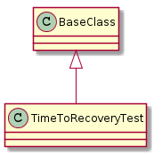

A module to hold the time-to-recovery test.
TimeToRecoveryTestParameters = namedtuple("TimeToRecoveryTestParameters",
['output',
'device',
'time_to_recovery'])
NEWLINE_STRING = "{0}\n"

TimeToRecoveryTest(parameters, *args, **kwargs) |
A time to recovery Test times how long it takes to recover. | ||
TimeToRecoveryTest.device |
|||
TimeToRecoveryTest.output |
|||
TimeToRecoveryTest.time_to_recovery |
|
||
TimeToRecoveryTest.run(parameters) |
Runs a single time to recovery test. | ||
TimeToRecoveryTest.save_data(elapsed, ...) |
|
||
TimeToRecoveryTest.log_message(message) |
|